| Metric | Value |
|---|
| Length | 248387328 bp |
| Unique Reads | 3311750463 |
| Covered Bases | 247671107 |
| Coverage Percent | 99.71% |
| Average Depth | 30.71× |
| Quality Metrics |
| Average MapQ | 61.4 |
| Average BaseQ | 34.7 |
| Q30 Percentage | 100.00% |
| State Distribution |
| Reference N | 0 |
| Callable | 219553300 |
| No Coverage | 716221 |
| Low Coverage | 6020257 |
| Excessive Coverage | 0 |
| Poor Mapping Quality | 22097550 |
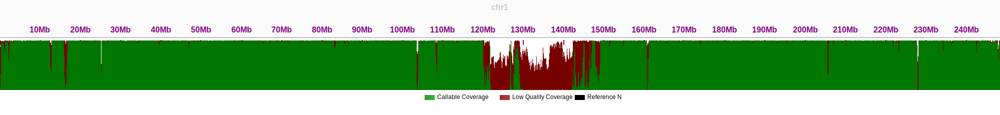
Coverage distribution for chr1
| Metric | Value |
|---|
| Length | 242696752 bp |
| Unique Reads | 3051289189 |
| Covered Bases | 242354815 |
| Coverage Percent | 99.86% |
| Average Depth | 30.31× |
| Quality Metrics |
| Average MapQ | 61.7 |
| Average BaseQ | 34.7 |
| Q30 Percentage | 100.00% |
| State Distribution |
| Reference N | 0 |
| Callable | 232455469 |
| No Coverage | 341937 |
| Low Coverage | 1433887 |
| Excessive Coverage | 0 |
| Poor Mapping Quality | 8465459 |
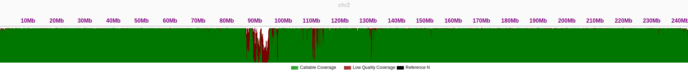
Coverage distribution for chr2
| Metric | Value |
|---|
| Length | 201105948 bp |
| Unique Reads | 1794969868 |
| Covered Bases | 200965241 |
| Coverage Percent | 99.93% |
| Average Depth | 30.30× |
| Quality Metrics |
| Average MapQ | 61.8 |
| Average BaseQ | 34.7 |
| Q30 Percentage | 100.00% |
| State Distribution |
| Reference N | 0 |
| Callable | 193679515 |
| No Coverage | 140707 |
| Low Coverage | 491317 |
| Excessive Coverage | 0 |
| Poor Mapping Quality | 6794409 |
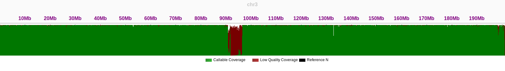
Coverage distribution for chr3
| Metric | Value |
|---|
| Length | 193574945 bp |
| Unique Reads | 1352231669 |
| Covered Bases | 191975823 |
| Coverage Percent | 99.17% |
| Average Depth | 29.42× |
| Quality Metrics |
| Average MapQ | 61.8 |
| Average BaseQ | 34.7 |
| Q30 Percentage | 100.00% |
| State Distribution |
| Reference N | 0 |
| Callable | 184947216 |
| No Coverage | 1599122 |
| Low Coverage | 2716243 |
| Excessive Coverage | 0 |
| Poor Mapping Quality | 4312364 |
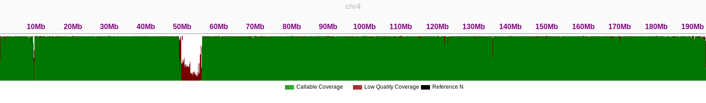
Coverage distribution for chr4
| Metric | Value |
|---|
| Length | 182045439 bp |
| Unique Reads | 1193797796 |
| Covered Bases | 181944830 |
| Coverage Percent | 99.94% |
| Average Depth | 30.17× |
| Quality Metrics |
| Average MapQ | 61.7 |
| Average BaseQ | 34.7 |
| Q30 Percentage | 100.00% |
| State Distribution |
| Reference N | 0 |
| Callable | 173949118 |
| No Coverage | 100609 |
| Low Coverage | 399521 |
| Excessive Coverage | 0 |
| Poor Mapping Quality | 7596191 |
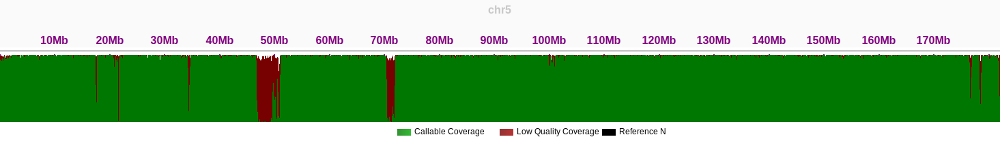
Coverage distribution for chr5
| Metric | Value |
|---|
| Length | 172126628 bp |
| Unique Reads | 860154125 |
| Covered Bases | 171077070 |
| Coverage Percent | 99.39% |
| Average Depth | 30.13× |
| Quality Metrics |
| Average MapQ | 62.0 |
| Average BaseQ | 34.7 |
| Q30 Percentage | 100.00% |
| State Distribution |
| Reference N | 0 |
| Callable | 166875473 |
| No Coverage | 1049558 |
| Low Coverage | 968078 |
| Excessive Coverage | 0 |
| Poor Mapping Quality | 3233519 |
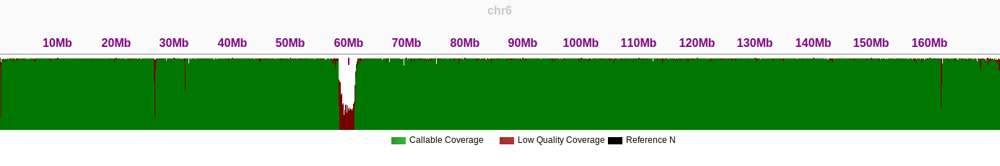
Coverage distribution for chr6
| Metric | Value |
|---|
| Length | 160567428 bp |
| Unique Reads | 593468536 |
| Covered Bases | 160397214 |
| Coverage Percent | 99.89% |
| Average Depth | 30.48× |
| Quality Metrics |
| Average MapQ | 61.6 |
| Average BaseQ | 34.7 |
| Q30 Percentage | 100.00% |
| State Distribution |
| Reference N | 0 |
| Callable | 151499069 |
| No Coverage | 170214 |
| Low Coverage | 1149329 |
| Excessive Coverage | 0 |
| Poor Mapping Quality | 7748816 |
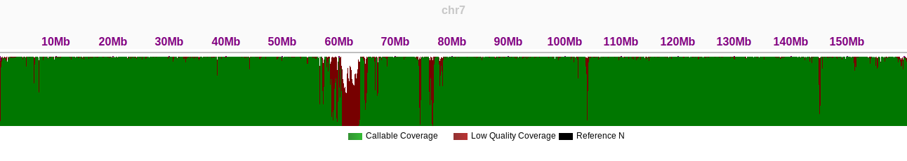
Coverage distribution for chr7
| Metric | Value |
|---|
| Length | 146259331 bp |
| Unique Reads | 112939283 |
| Covered Bases | 145990389 |
| Coverage Percent | 99.82% |
| Average Depth | 30.19× |
| Quality Metrics |
| Average MapQ | 61.9 |
| Average BaseQ | 34.7 |
| Q30 Percentage | 100.00% |
| State Distribution |
| Reference N | 0 |
| Callable | 139846928 |
| No Coverage | 268942 |
| Low Coverage | 714435 |
| Excessive Coverage | 0 |
| Poor Mapping Quality | 5429026 |
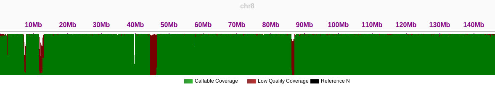
Coverage distribution for chr8
| Metric | Value |
|---|
| Length | 150617247 bp |
| Unique Reads | 4089213995 |
| Covered Bases | 148414843 |
| Coverage Percent | 98.54% |
| Average Depth | 27.55× |
| Quality Metrics |
| Average MapQ | 60.5 |
| Average BaseQ | 34.7 |
| Q30 Percentage | 100.00% |
| State Distribution |
| Reference N | 0 |
| Callable | 112806017 |
| No Coverage | 2202404 |
| Low Coverage | 14135175 |
| Excessive Coverage | 0 |
| Poor Mapping Quality | 21473651 |
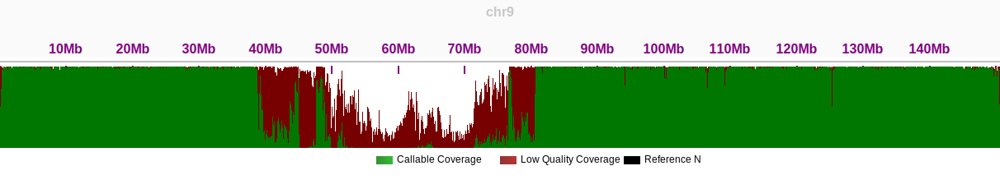
Coverage distribution for chr9
| Metric | Value |
|---|
| Length | 134758134 bp |
| Unique Reads | 4136861356 |
| Covered Bases | 134649821 |
| Coverage Percent | 99.92% |
| Average Depth | 30.72× |
| Quality Metrics |
| Average MapQ | 61.7 |
| Average BaseQ | 34.7 |
| Q30 Percentage | 100.00% |
| State Distribution |
| Reference N | 0 |
| Callable | 128785012 |
| No Coverage | 108313 |
| Low Coverage | 864139 |
| Excessive Coverage | 0 |
| Poor Mapping Quality | 5000670 |
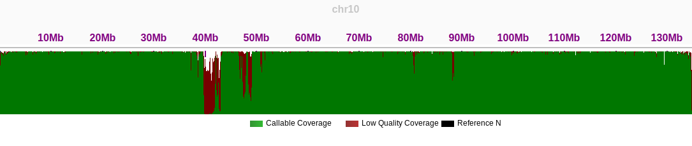
Coverage distribution for chr10
| Metric | Value |
|---|
| Length | 135127769 bp |
| Unique Reads | 4146971359 |
| Covered Bases | 134619421 |
| Coverage Percent | 99.62% |
| Average Depth | 30.81× |
| Quality Metrics |
| Average MapQ | 61.9 |
| Average BaseQ | 34.7 |
| Q30 Percentage | 100.00% |
| State Distribution |
| Reference N | 0 |
| Callable | 129438774 |
| No Coverage | 508348 |
| Low Coverage | 1415434 |
| Excessive Coverage | 0 |
| Poor Mapping Quality | 3765213 |
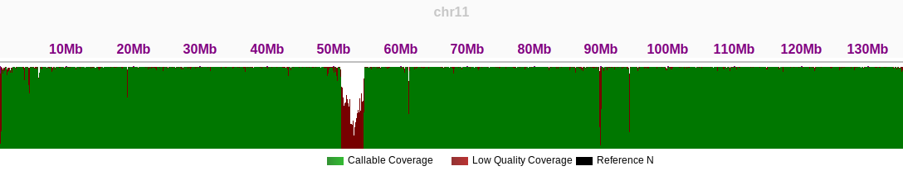
Coverage distribution for chr11
| Metric | Value |
|---|
| Length | 133324548 bp |
| Unique Reads | 4073299193 |
| Covered Bases | 133250422 |
| Coverage Percent | 99.94% |
| Average Depth | 30.57× |
| Quality Metrics |
| Average MapQ | 62.0 |
| Average BaseQ | 34.7 |
| Q30 Percentage | 100.00% |
| State Distribution |
| Reference N | 0 |
| Callable | 129296253 |
| No Coverage | 74126 |
| Low Coverage | 381994 |
| Excessive Coverage | 0 |
| Poor Mapping Quality | 3572175 |
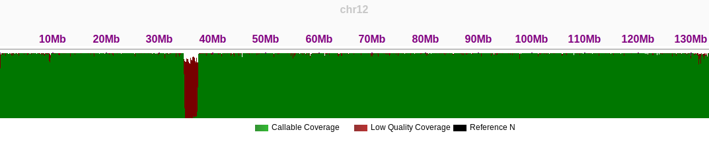
Coverage distribution for chr12
| Metric | Value |
|---|
| Length | 113566686 bp |
| Unique Reads | 3211210355 |
| Covered Bases | 110174500 |
| Coverage Percent | 97.01% |
| Average Depth | 29.15× |
| Quality Metrics |
| Average MapQ | 61.4 |
| Average BaseQ | 34.7 |
| Q30 Percentage | 100.00% |
| State Distribution |
| Reference N | 0 |
| Callable | 95730965 |
| No Coverage | 3392186 |
| Low Coverage | 4085107 |
| Excessive Coverage | 0 |
| Poor Mapping Quality | 10358428 |
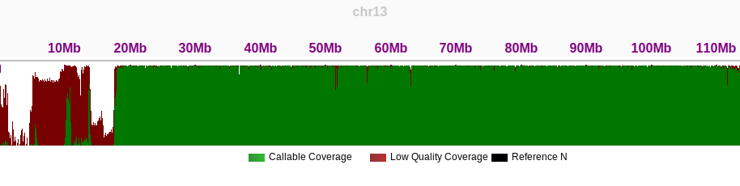
Coverage distribution for chr13
| Metric | Value |
|---|
| Length | 101161492 bp |
| Unique Reads | 3057762046 |
| Covered Bases | 100795487 |
| Coverage Percent | 99.64% |
| Average Depth | 30.34× |
| Quality Metrics |
| Average MapQ | 60.9 |
| Average BaseQ | 34.7 |
| Q30 Percentage | 100.00% |
| State Distribution |
| Reference N | 0 |
| Callable | 89319773 |
| No Coverage | 366005 |
| Low Coverage | 1744832 |
| Excessive Coverage | 0 |
| Poor Mapping Quality | 9730882 |
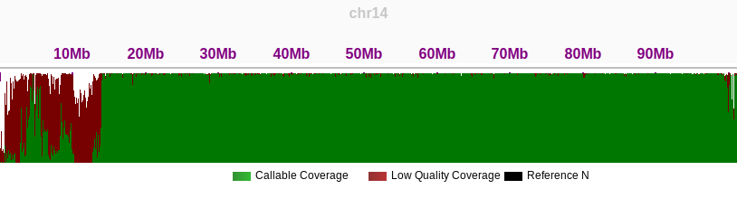
Coverage distribution for chr14
| Metric | Value |
|---|
| Length | 99753195 bp |
| Unique Reads | 3088800996 |
| Covered Bases | 99594008 |
| Coverage Percent | 99.84% |
| Average Depth | 31.01× |
| Quality Metrics |
| Average MapQ | 60.6 |
| Average BaseQ | 34.7 |
| Q30 Percentage | 100.00% |
| State Distribution |
| Reference N | 0 |
| Callable | 79346841 |
| No Coverage | 159187 |
| Low Coverage | 2617415 |
| Excessive Coverage | 0 |
| Poor Mapping Quality | 17629752 |
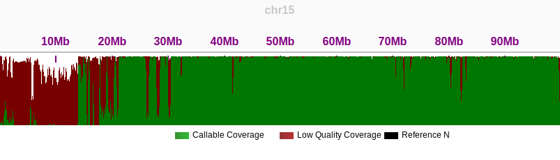
Coverage distribution for chr15
| Metric | Value |
|---|
| Length | 96330374 bp |
| Unique Reads | 2955993238 |
| Covered Bases | 96239245 |
| Coverage Percent | 99.91% |
| Average Depth | 30.72× |
| Quality Metrics |
| Average MapQ | 60.9 |
| Average BaseQ | 34.6 |
| Q30 Percentage | 100.00% |
| State Distribution |
| Reference N | 0 |
| Callable | 75057057 |
| No Coverage | 91129 |
| Low Coverage | 1897334 |
| Excessive Coverage | 0 |
| Poor Mapping Quality | 19284854 |
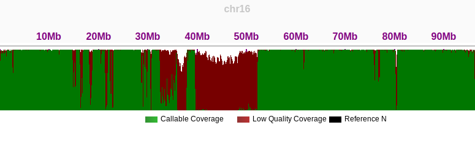
Coverage distribution for chr16
| Metric | Value |
|---|
| Length | 84276897 bp |
| Unique Reads | 2690967758 |
| Covered Bases | 84181002 |
| Coverage Percent | 99.89% |
| Average Depth | 31.97× |
| Quality Metrics |
| Average MapQ | 61.6 |
| Average BaseQ | 34.6 |
| Q30 Percentage | 100.00% |
| State Distribution |
| Reference N | 0 |
| Callable | 76816637 |
| No Coverage | 95895 |
| Low Coverage | 1056921 |
| Excessive Coverage | 0 |
| Poor Mapping Quality | 6307444 |
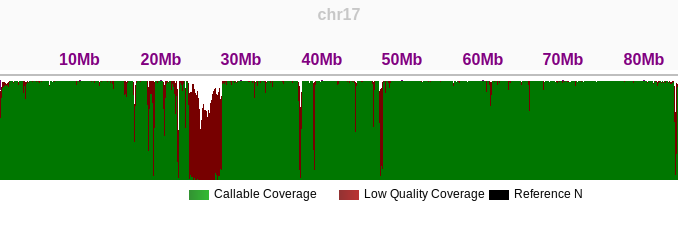
Coverage distribution for chr17
| Metric | Value |
|---|
| Length | 80542538 bp |
| Unique Reads | 2425478906 |
| Covered Bases | 80497422 |
| Coverage Percent | 99.94% |
| Average Depth | 30.13× |
| Quality Metrics |
| Average MapQ | 61.7 |
| Average BaseQ | 34.7 |
| Q30 Percentage | 100.00% |
| State Distribution |
| Reference N | 0 |
| Callable | 74011776 |
| No Coverage | 45116 |
| Low Coverage | 671127 |
| Excessive Coverage | 0 |
| Poor Mapping Quality | 5814519 |
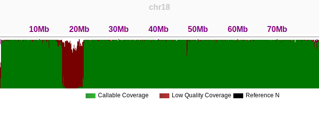
Coverage distribution for chr18
| Metric | Value |
|---|
| Length | 61707364 bp |
| Unique Reads | 2004358796 |
| Covered Bases | 61625312 |
| Coverage Percent | 99.87% |
| Average Depth | 32.52× |
| Quality Metrics |
| Average MapQ | 61.7 |
| Average BaseQ | 34.5 |
| Q30 Percentage | 100.00% |
| State Distribution |
| Reference N | 0 |
| Callable | 55114349 |
| No Coverage | 82052 |
| Low Coverage | 634147 |
| Excessive Coverage | 0 |
| Poor Mapping Quality | 5876816 |
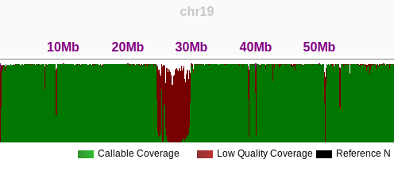
Coverage distribution for chr19
| Metric | Value |
|---|
| Length | 66210255 bp |
| Unique Reads | 2085121011 |
| Covered Bases | 65743208 |
| Coverage Percent | 99.29% |
| Average Depth | 31.72× |
| Quality Metrics |
| Average MapQ | 61.8 |
| Average BaseQ | 34.6 |
| Q30 Percentage | 100.00% |
| State Distribution |
| Reference N | 0 |
| Callable | 61255482 |
| No Coverage | 467047 |
| Low Coverage | 1431795 |
| Excessive Coverage | 0 |
| Poor Mapping Quality | 3055931 |
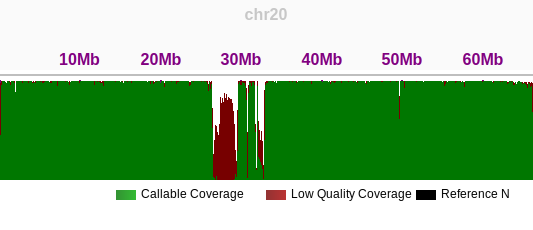
Coverage distribution for chr20
| Metric | Value |
|---|
| Length | 45090682 bp |
| Unique Reads | 1442699624 |
| Covered Bases | 44906366 |
| Coverage Percent | 99.59% |
| Average Depth | 32.13× |
| Quality Metrics |
| Average MapQ | 59.6 |
| Average BaseQ | 34.6 |
| Q30 Percentage | 100.00% |
| State Distribution |
| Reference N | 0 |
| Callable | 35230062 |
| No Coverage | 184316 |
| Low Coverage | 753859 |
| Excessive Coverage | 0 |
| Poor Mapping Quality | 8922445 |
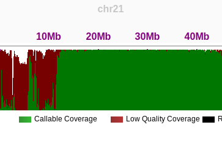
Coverage distribution for chr21
| Metric | Value |
|---|
| Length | 51324926 bp |
| Unique Reads | 1657776596 |
| Covered Bases | 50065932 |
| Coverage Percent | 97.55% |
| Average Depth | 33.11× |
| Quality Metrics |
| Average MapQ | 58.9 |
| Average BaseQ | 34.6 |
| Q30 Percentage | 100.00% |
| State Distribution |
| Reference N | 0 |
| Callable | 36551573 |
| No Coverage | 1258994 |
| Low Coverage | 2077532 |
| Excessive Coverage | 0 |
| Poor Mapping Quality | 11436827 |
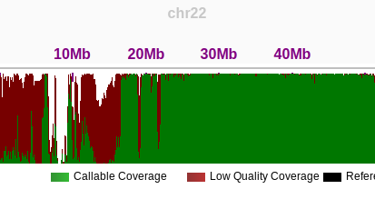
Coverage distribution for chr22
| Metric | Value |
|---|
| Length | 154259566 bp |
| Unique Reads | 2319484114 |
| Covered Bases | 154042120 |
| Coverage Percent | 99.86% |
| Average Depth | 15.06× |
| Quality Metrics |
| Average MapQ | 61.4 |
| Average BaseQ | 34.7 |
| Q30 Percentage | 100.00% |
| State Distribution |
| Reference N | 0 |
| Callable | 142123315 |
| No Coverage | 217446 |
| Low Coverage | 2123159 |
| Excessive Coverage | 0 |
| Poor Mapping Quality | 9795646 |
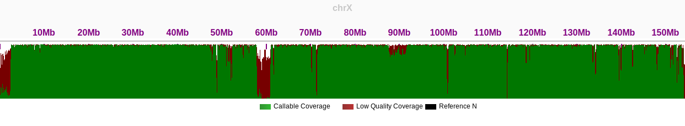
Coverage distribution for chrX
| Metric | Value |
|---|
| Length | 62460029 bp |
| Unique Reads | 769882272 |
| Covered Bases | 60744783 |
| Coverage Percent | 97.25% |
| Average Depth | 12.67× |
| Quality Metrics |
| Average MapQ | 54.9 |
| Average BaseQ | 34.7 |
| Q30 Percentage | 100.00% |
| State Distribution |
| Reference N | 0 |
| Callable | 16868081 |
| No Coverage | 1715246 |
| Low Coverage | 20514970 |
| Excessive Coverage | 0 |
| Poor Mapping Quality | 23361732 |
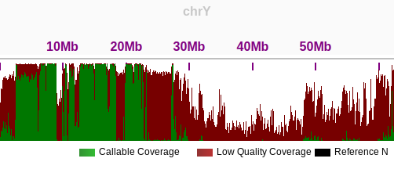
Coverage distribution for chrY
| Metric | Value |
|---|
| Length | 16569 bp |
| Unique Reads | 8115684 |
| Covered Bases | 16569 |
| Coverage Percent | 100.00% |
| Average Depth | 489.81× |
| Quality Metrics |
| Average MapQ | 61.8 |
| Average BaseQ | 34.3 |
| Q30 Percentage | 100.00% |
| State Distribution |
| Reference N | 0 |
| Callable | 16123 |
| No Coverage | 0 |
| Low Coverage | 0 |
| Excessive Coverage | 0 |
| Poor Mapping Quality | 446 |
 Coverage distribution for chrM
Coverage distribution for chrM